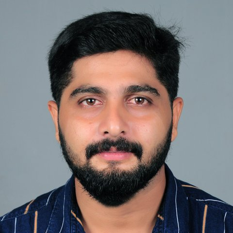

11+ years keeping banking, government and business IT running across Windows Server, Active Directory, Cisco networks, Microsoft 365 and hands-on hardware support, with minimal downtime.

I'm an IT infrastructure professional from Kerala, India, with more than 11 years of experience in system administration, network support and end-user IT across banking, public-sector and enterprise environments.
In my most recent role I was the technical administrator for State Bank of India branch IT operations in the Trivandrum region. I handled Active Directory, Group Policy, DNS/DHCP, endpoint patching, OS deployment, hardware servicing and backup & restore, onsite and remotely.
I'm now growing toward cloud infrastructure through AWS and CompTIA A+ studies, and I'm looking for a System Administrator, Desktop Support Engineer, IT Support Engineer or Network Administrator role in the UAE.
Ten everyday IT and desktop support problems from my 11+ years in banking, government and business IT. Each one plays out step by step: problem, diagnosis, fix and check.
Home-lab projects with the code, build guides and my own screenshots. Each card opens the project on GitHub.
Health reports, connectivity checks, Robocopy backups, software inventory and inactive-AD-user clean-up, tested on my own PC.
5 VLANs, inter-VLAN routing, DHCP, NAT, guest isolation with ACLs, SSH-only management and port security. 7 of 8 tests passed.
Windows Server 2025 domain controller: AD DS, DNS, DHCP, 15 users in 5 departments, Group Policy and NTFS file shares, built with PowerShell.
CloudFormation template for a custom VPC, least-privilege security group, Session Manager access, IMDSv2 and a CloudWatch alarm.
Amrita College of Engineering and Technology, Nagercoil · 2021
Attested certificateSun College of Engineering and Technology, Nagercoil · 2011
Extending my on-premises experience into cloud and industry-standard credentials.
I'm available for interviews in person in Abu Dhabi or by video call, and can join immediately. You can download my full CV below.